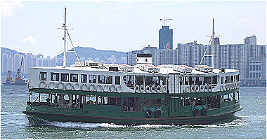
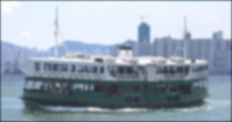
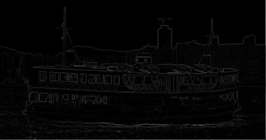
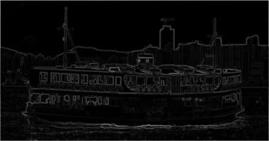
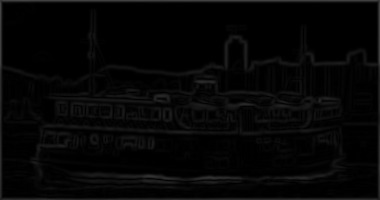
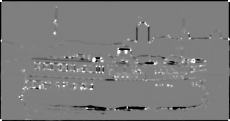
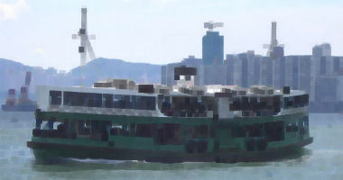
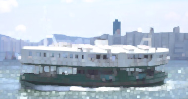

One dimensional signals such as audio samples can be filtered using a 1D convolution. Convolution can also be performed using composite values such as complex numbers.
(use-modules (aiscm core))
(convolve (arr 0 0 2 2 2 2 0 0) (arr 1 0 -1))
;#<sequence<int<16,signed>>>:
;(0 2 2 0 0 -2 -2 0)
(convolve (arr 0 0 1 0 0 0 0 0 2 0) (arr +1 +i -1 -i))
;#<sequence<complex<int<16,signed>>>>:
;(1 0.0+1.0i -1 0.0-1.0i 0 0 2 0.0+2.0i -2 0.0-2.0i)Convolution can also be performed on 2D data.
(use-modules (aiscm core))
(convolve (arr (0 0 0 0 0) (0 0 1 0 0) (0 0 0 0 0)) (arr (-1 0 1) (-2 0 2) (-1 0 1)))
;#<sequence<sequence<int<16,signed>>>>:
;((0 -1 0 1 0)
; (0 -2 0 2 0)
; (0 -1 0 1 0))Here is the test input image for comparison.
A simple filter for blurring an image is the box filter. Note that convolution is performed on a colour image.
(use-modules (aiscm magick) (aiscm core))
(define (box-filter img) (/ (convolve img (fill <sint> '(5 5) 1)) 25))
(write-image (to-type (rgb <ubyte>) (box-filter (read-image "star-ferry.jpg"))) "box-filter.jpg")Image sharpening increases the difference between neighbouring pixels.
(use-modules (aiscm magick) (aiscm core))
(define (sharpen img) (major 0 (minor 255 (convolve img (arr (0 -1 0) (-1 5 -1) (0 -1 0))))))
(write-image (to-type (rgb <ubyte>) (sharpen (read-image "star-ferry.jpg"))) "sharpen.jpg")
A Gaussian filter can be used to blur an image.
(use-modules (aiscm magick) (aiscm core) (aiscm filters))
(write-image (to-type (rgb <ubyte>) (gauss-blur (read-image "star-ferry.jpg") 2.0)) "gauss-blur.jpg")
Convolutions can be used for edge detection.
Here is an implementation of the Roberts cross edge detector.
(use-modules (aiscm magick) (aiscm image) (aiscm core))
(define (to-gray img) (from-image (convert-image (to-image img) 'GRAY)))
(define (norm x y) (/ (+ (abs x) (abs y)) 2))
(define (roberts-cross img) (/ (norm (convolve img (arr (+1 0) ( 0 -1))) (convolve img (arr ( 0 +1) (-1 0)))) 2))
(write-image (to-type <ubyte> (roberts-cross (to-gray (read-image "star-ferry.jpg")))) "roberts-cross.jpg")
Another popular edge detector is the Sobel operator.
(use-modules (aiscm magick) (aiscm image) (aiscm core))
(define (to-gray img) (from-image (convert-image (to-image img) 'GRAY)))
(define (norm x y) (/ (+ (abs x) (abs y)) 8))
(define (sobel img) (norm (convolve img (arr (1 0 -1) (2 0 -2) ( 1 0 -1))) (convolve img (arr (1 2 1) (0 0 0) (-1 -2 -1)))))
(write-image (to-type <ubyte> (sobel (to-gray (read-image "star-ferry.jpg")))) "sobel.jpg")
It is also possible to use a Gauss gradient filter to detect edges.
(use-modules (aiscm magick) (aiscm image) (aiscm core) (aiscm filters))
(define img (from-image (convert-image (to-image (read-image "star-ferry.jpg")) 'GRAY)))
(define (norm x y) (sqrt (+ (* x x) (* y y))))
(write-image (to-type <ubyte> (norm (gauss-gradient-x img 2.0) (gauss-gradient-y img 2.0))) "gauss-gradient.jpg")
The following example shows the Harris-Stephens corner and edge detector.
(use-modules (aiscm magick) (aiscm image) (aiscm core) (aiscm filters))
(define img (from-image (convert-image (to-image (read-image "star-ferry.jpg")) 'GRAY)))
(define result (harris-stephens img 1.0 0.05))
(write-image (to-type <ubyte> (major (minor (+ (/ result 1000) 127) 255) 0)) "harris-stephens.jpg")
Finally here is an implementation of Conway’s Game of Life.
(use-modules (aiscm xorg) (aiscm core))
(define img (fill <bool> '(60 100) #f))
(set img '(0 . 3) '(0 . 3) (arr (#f #t #f) (#f #f #t) (#t #t #t)))
(set img '(4 . 7) '(50 . 53) (arr (#t #t #t) (#f #f #t) (#f #t #f)))
(set img '(27 . 30) 25 #t)
(show
(lambda (dsp)
(let [(neighbours (convolve (to-type <ubyte> img) (arr (1 1 1) (1 0 1) (1 1 1))))]
(set! img (&& (ge neighbours (where img 2 3)) (le neighbours 3)))
(where img 255 0)))
#:fullscreen #t #:io IO-OPENGL)Erosion is a local operator taking the local minimum of an image:
(use-modules (aiscm core) (aiscm magick))
(write-image (erode (read-image "star-ferry.jpg") 5) "eroded.jpg")
In a similar fashion dilation is the local maximum of an image:
(use-modules (aiscm core) (aiscm magick))
(write-image (dilate (read-image "star-ferry.jpg") 5) "dilated.jpg")